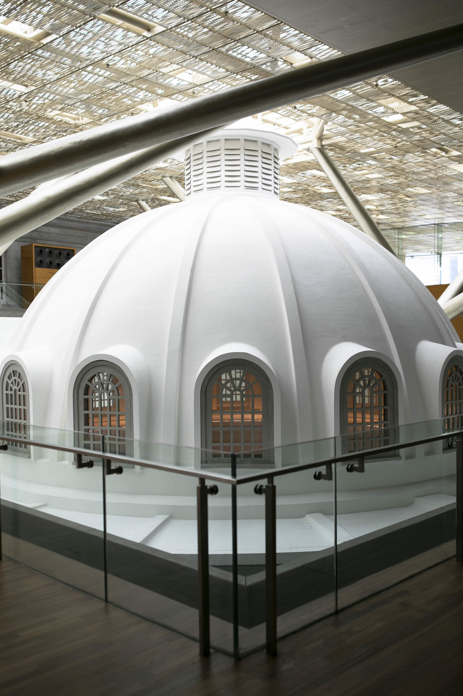
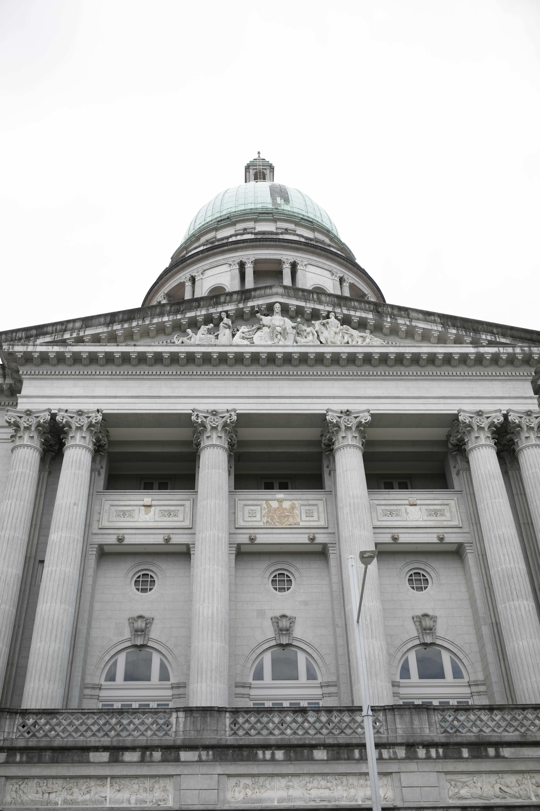
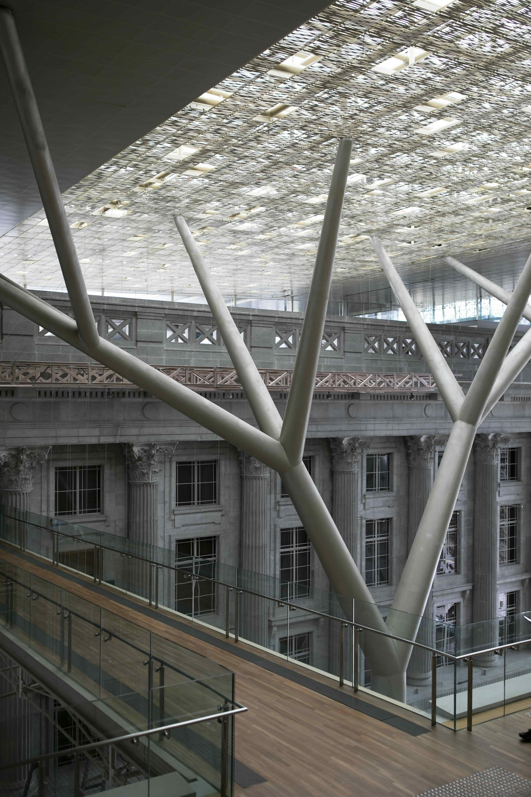
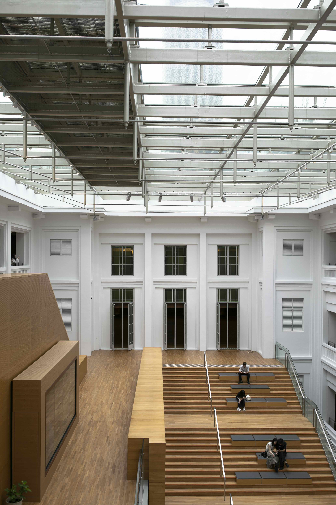
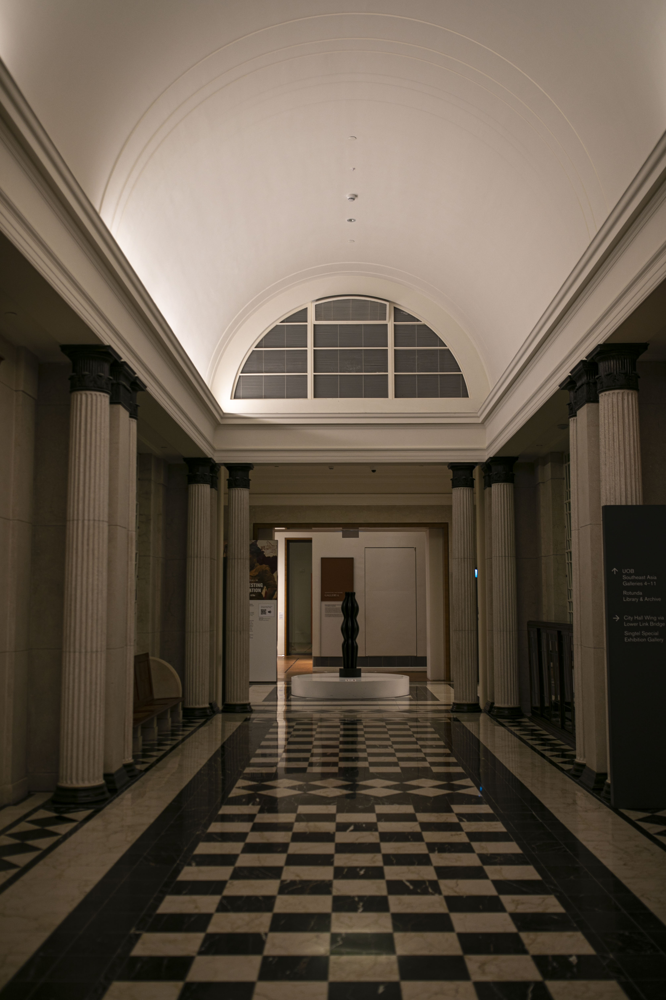
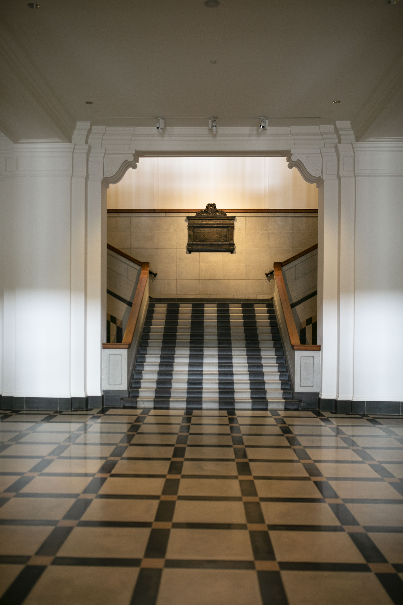

National Gallery Singapore

The former Supreme Court building, built in 1939, adopts the Neoclassical style, and its dome is a key feature of the architecture.

The National Gallery Singapore is a global temple of visual arts and one of Singapore's most important cultural landmarks.

Renowned architectural firm Studio Milou Singapore ingeniously uses two massive "tree - like" steel structural pillars and a connecting bridge spanning the two buildings.

Modern-style steel structures (such as support structures or bridge components) are combined with the historical architectural elements in the background (such as walls and windows)

The ingenious combination of historical buildings and modern art spaces not only retains the charm of the historical buildings but also endows the space with an artistic atmosphere and functionality through modern design.

The layout and material contrast of the staircase become the epitome of the architectural aesthetics of the art gallery.